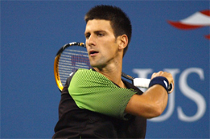
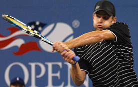
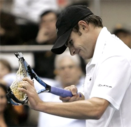
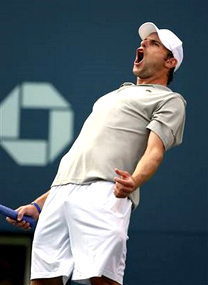
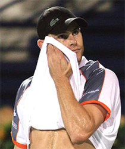
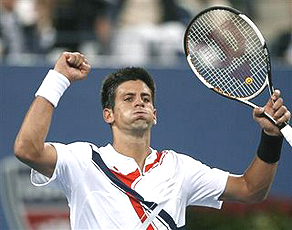
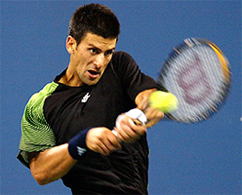
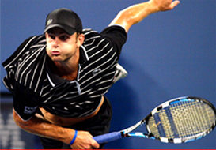
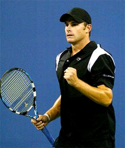
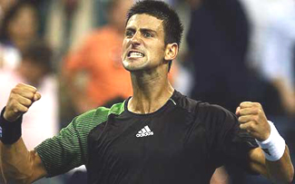

Previous: The Elements of Game Style | 🏠 Strategy Home | Next: The Four Components of Match Play - STrategy and Game Style
The favorite and the underdog
Comprehensive unified tennis knowledge base — Fundamentals, Stroke Analysis, Reference Library, and more
The Favorite and the Underdog:Understanding Match Dynamics
Jeff McCullough


The Favorite and the Underdog: what were the match dynamics?
In the quarterfinals of the 2008 U.S. Open the third seed Novak Djokovic defeated the eighth seed Andy Roddick in four sets. Yes, the big “story” of the Open was obviously Roger Federer. But for the average player this match was a virtual archetype when it comes to understanding the dynamics of match play, and especially what it means to be the favorite or the underdog in pressure situations.
Once we understand these dynamics, we can see how players at all levels can apply them and have a significant impact on their own match outcomes. By studying the forces at work here, we can gain an understanding of some of the things that happen in matches that may seem surprising—things that aren’t in fact so surprising to experienced observers.
So what happened in that quarterfinal Thursday night match in New York? For starters the favorite, Djokovic won, and the underdog, Roddick, lost, although it appeared Andy had a real chance in the fourth set.
Djokovic got off to a big lead, relying on his superior baseline proficiency, his movement and his tenacity, taking the first two sets, 6-2, 6-3. Roddick lost the first set in 27 minutes behind a barrage of errors and a low first serve percentage.

A Babolat racket was the innocent victim.
After being completely outplayed in the first two sets Roddick was so angry he brutalized an innocent Babolat racket. However, the underdog found his service rhythm in the third set and was basically unbreakable. He began to paint the lines with his big inside out and inside in forehands. Even his shaky, flawed two-handed backhand yielded some winners and forced errors. Now Djokovic was the one who looked frustrated and went down 6-3 in the third.
And things continued in Andy’s direction through most of the fourth. Roddick again dominated with his serve. He got up a break and served for the set at 5-4. But after going up 30-love, two points from the fifth set, he hit two double faults that turned the match.
Inexplicably, he went for two huge second serves and missed them both.
The Swedish champion Stefan Edberg once said that there comes a time “when a match can be had.” This was one of those times. Watching at home after the double faults I said to myself “that should just about do it.”
Roddick knew it. Djokovic knew it. A lot of fans could also feel it. After the second double fault a groan reverberated throughout the stadium. The double faults were a mental and emotional turning point—even though the score was still 30 all in Andy’s service game. Djokovic went on to break back and then was able to win the fourth set and the match in the tiebreaker that followed.

Until the double faults, great positive intensity.
The impact was obvious in Andy’s altered body language. Prior to the double faults, he had exhibited great positive intensity. After breaking Djokovic's serve earlier in the set, he looked almost like his former coach Jimmy Connors, with his head thrown back and his fists pumping wildly, back peddling in a sort of reverse moon walk. Then suddenly after the doubles, he looked beaten.
It was also obvious when the TV cameras panned into the American's court side box. Led by Patrick McEnroe, his entourage displayed brave faces and gave perfunctory encouraging gestures. But you could see their belief had faded. They had all seen enough tennis matches to know what was about to happen.
Inexperienced observers often believe that the pressure mounts as you fall further behind in a tennis match and defeat is imminent. But sports psychologists have observed the reverse. The pressure actually mounts on the player who is ahead as he gets closer to the goal. At 5-4, Roddick had been serving to get into the fifth set. He was one point away from a set point and evening the match.
At 5 all Djokovic held easily. With the pressure of serving for the fourth set gone, Roddick was able to hold serve to get into the fourth set tie-breaker, so again, theoretically, he was still in the match.
But at 5 all in the breaker, after a long, brilliant rally in which both players traded and absorbed furious punches from positions well beyond the sidelines, Roddick deposited a backhand drop shot several feet short of the net strap.
Now Roddick's face had defeat written all over it. He seemed totally resigned as he walked over to the ad court to receive serve, and the curtain came down one point later.

After the double faults, resignation and defeat.
The next day's headlines would proclaim that Novak Djokovic defeated Andy Roddick in a “close” match that “could have gone either way.” In reality, when Roddick double faulted serving for the fourth set, the match was all but over. So let’s examine the dynamics that were at work, dynamics that recur time and time again in matches at the pro level on down.
The Script
Here is a simple fact. Most of the time in sports, and tennis is no different, the favorite wins and the underdog loses. There are usually compelling reasons why one player is favored. And the advantages that make a player the favorite leads to victory more often than not.
Famed former college tennis coach Chuck Kriese calls this relationship between favorite and underdog “The Script.” It is the recurring primary dynamic in most tennis matches. But not always. If the favorite always won we, the audience, would lose interest. The underdog comes through just often enough to make it interesting, and upsets are emotionally compelling. So why does the favorite usually win? And when upsets do occur why do they happen?
Favorites win in part because they have the game.
First, let’s ask what does the underdog has to do to win against the odds. Most of the time the answer is simple: The underdog has to raise his game at critical moments. Then he must sustain the change in momentum. If he can keep the momenturm long enough, he has a legitimate chance to chalk up an upset. This was exactly the opportunity Roddick had as he served for the fourth set.
Chuck Kriese also argues that when the underdog grabs the momentum, but then loses it at a critical juncture as happened to Roddick, it is very difficult to get it back. Recovery is still possible, but far more often than not, it never happens.
Emotional Control
Now let’s look at it from the favorite side. The favorite usually wins because the favorite is simply likely to perform better at the critical junctures. Why? Well, there is a reason the favorite is the favorite. Favorites usually win because they have more game. They have proven this in previous matches, and winning previous matches breeds confidence. Having more game and more confidence simply means better performance at turning points and under pressure. It’s a snowball effect.
The favorite is also helped at these times by the relative lack of confidence on the part of the underdog. Lacking the experience of having come through under pressure, this is the time that the underdog so often crumbles or chokes. The underdog typically either makes too many unforced errors or fails to play aggressively enough to neutralize or overcome the favorite. Perhaps there is no other stronger indicator of a failure of confidence than a double fault on a big point in a critical game.
The Confidence Exchange
After an escape like Djokovic had with Roddick’s double faults, the favorite is likely to be inspired and energized, often hitting another gear. This only compounds the challenge faced by the underdog. The result in what I term a “confidence exchange.” The underdog's rising confidence is snuffed out, and the favorite’s flagging confidence is suddenly revived. After breaking to even the match at 5 all Djokovic looked both relieved and bolstered. Only a few minutes earlier Roddick appeared to be supercharged. Now he appeared to be in state of shock. The bottom line was that The Script played itself out as it usually does.

After a near escape, the favorite is often relieved and bolstered.
The Battle of the Body Language
In each match there are many sub plots. One is the “battle of the body language.” Body language is the best gage for determining what is really going on internally with a competitive tennis player in the heat of battle.
When you watch the pros take notice of who is truly sending the message to the other side of the court that they believe they can win. In this match that person was Novak Djokovic. Despite shaking his head in frustration late in the fourth set after framing a couple of 140 m.p.h. serves, he was able to shake this negativity off. The message to Andy was clear: “You may be serving well, but I still believe I will win.”
After the second double fault Andy’s face conveyed the opposite message. Then after the failed drop shot any remaining positive intensity vanished into the night. The fight had been all but sucked out of him by a tougher, smarter opponent.
Decision Making and Problem Solving
In pressure situations such as the one these players faced in this quarterfinal match, it is the ability to think clearly and make good decisions at critical times that often makes the difference between winning and losing. Even when things are moving very quickly, players must still think clearly and react effectively. Djokovic passed this test by making good choices and Roddick did not.
For Roddick this decision making challenge is increased because he has been criticized by the fans and the press for his relative lack of success. The result is that he is so desperate to succeed that sometimes it causes him to play either recklessly or foolishly.
Roddick's rash decision to go for two huge second serves on these critical points has to be called into question. In point of fact, he has a very good second serve and might have held serve by hitting it, rather than over hitting and trying to do more than was likely necessary to complete this task.
How does your level of belief affect your shot tolerance?
Shot Tolerance and Stroke Weakness
Let’s look at what happened from another, related angle. Elliot Teltscher has identified a basic attribute in the games of all tennis players, which is their “shot tolerance.” (Click Here.) Shot tolerance is the average number of balls a player is physically, mentally and emotionally able to hit in a given point. When players reach the limit of their shot tolerance they are much more likely to either abruptly go for a winner, regardless of their position in the point, or to try a low percentage shot.
When a player is near this threshold and must also hit a shot which is his “weakness” then he is even more likely to make a bad decision. For Roddick I believe this is what resulted in that ill advised drop shot at 5 all in the fourth set tie-breaker. It was not a surprise Roddick went for the drop shot instead of attempting an aggressive two-handed backhand drive. It shows that, deep down, Andy lacks confidence in his backhand wing.
I suspect part of his rationale for over hitting his second serves was also the result of this mentality. At some level he may have been thinking that if he could just hit a couple of huge unreturnable serves he could avoid having to test his backhand in pressure packed groundstroke rallies. Novak Djokovic, on the other hand, has no discernible technical weaknesses. And that's one of the main reasons that his star is on the rise. He is not as susceptible to the same kind of doubts under pressure.
The Pay Off for You
And so the curtain came down on an interesting and highly entertaining match. There are many lessons for those seeking to improve their match play by observing pro matches with a more sophisticated eye. The fact is the very same dynamics seen in the Djokovic/Roddick match are present in matches at all levels.
Unfortunately, many recreational tennis players and even some hard-core competitive players are either unaware of these match play dynamics, or do not sufficiently attend to them. Consequently, they go hurtling into their matches with incomplete road maps. They fall into the all too common trap of thinking that the quick, simple solution lies in simply “trying harder.”


A critical question: are you a favorite or an underdog?
The Critical Question
There is a critical question to ask in applying the lessons of the Roddick match. Will you be a favorite, an underdog or a coequal? And how will your role determine your modus operandi? Just as in the pros, you must recognize that the status of each player in terms of pre-match dominance is not only operative, but usually determinant.
The exception occurs in the rare matches where the players themselves and others perceive the competitors as equivalent. Without the pressure of defending a superior position or trying to overcome a formidable challenge, both players feel less pressure. Sometimes these matches are more free wheeling and turn out to be more uninhibited and entertaining.
This was not the case in this quarterfinal U.S. Open match, in which there was a clear favorite and a clear underdog. And it is not the case in most club matches either because, most of the time, someone is perceived as having the upper hand. So the most important thing is to understand the meaning of your role of as favorite or underdog in a given match. This understanding is the prerequisite to defining your mission. Coaches need to educate their students regarding the impact of playing these different roles in order to improve their chances of winning.
Underdog
What if you are the underdog? What if you are playing next weekend in a club tournament or league match against a player you have lost to previously or who beats your regular opponents? What if you're an aspiring pro trying to gain some traction on the challenger circuit? What if you're number three on your high school team trying to challenge the number one? These are all equivalent situations insofar as they all involve the dominance dynamic.

As an underdog can you demonstrate true belief?
All underdogs need to understand that they have a mountain to climb. Just wanting to win and hoping for an upset is not enough. It takes decisive action. Specifically, underdogs must take advantage of opportunities to get ahead and then find a way to keep momentum and stay ahead. Opportunities cannot be wasted because there are typically precious few. So successful underdogs are opportunists. They have to be ready to respond because they are operating with a small window of opportunity to reverse the flow of the match.
At the first moment the favorite falters or weakens, the underdog has to step up and take the momentum for himself. This can mean playing more aggressively, or more consistently, depending on the circumstances.
But as important or more important, when the underdog has taken the lead, he must continue to perform in a manner which demonstrates true belief that he can win. Exhibiting true belief is the hardest thing for an underdog to do, which is why upsets are so rare. But if you wish to win as an underdog you must come into the match believing you can win. Then you must have the emotional strength to maintain this belief if you are fortunate to have opportunities, exploit them, and seize a lead.
Players have an almost unlimited number of excuses when they lose to better players, especially if they have had a glimmer of victory at some point in the match. But the bottom line you will not become an effective underdog until you address the underlying emotional challenges that go with performing in this role. Again, these are the belief that you can win and the courage to seize opportunities.

A favorite has to believe in his level of play, and be able to execute under pressure.
The Favorite Role
On the other hand, what if you're the clear favorite? Despite what many fans believe, it still can be emotionally challenging to play from this position because this is where the most pressure often resides. The favorite must cope with and overcome the pressure created by the expectation that he will win. This pressure can be either internally or externally generated, or both.
To do this, the favorite must believe in his generally higher level of play and then simply execute effectively. This is one of the things that made Pete Sampras so great. He won so many close matches because he truly believed he was the better player, and that eventually, his ability would win out. Of course this is much easier said than done, which is why so few players are able to stay at the top as long as Pete or Roger Federer, another great champion who has reported feeling “invincible” on the court.
As a favorite once you have established momentum you must also attempt to hold on to it all the way to the finish line. Unfortunately, this is also the point at which the temptation to relax and assume the victory becomes the greatest. But the confidence built on past success is the favorite’s greatest asset. Favorites have that precious “backlog of confidence” stemming from a lot of past wins in other big matches.
Novak Djokovic is increasingly looked upon as a player who may have these rare abilities. the more tough matches he pulls out, the more likely he is to continue to do this in the future.
In the Open match versus Roddick, Djokovic could draw on this experience, as well as on his Grand Slam victory in Australia and his higher world ranking. His confidence was also buoyed by knowing that Roddick, lacking big wins, could not have a comparable level of self-belief. At this point in his career, Roddick simply doesn't have the reputation of being able to come through in big matches.
So another key when you are in the favorite role is to simply recognize how tough it is for the underdog to seize and maintain momentum. The key is not to panic and continue to play your superior game.
When you are the favorite, play your superior game and show confidence with your body language.
Next time you are the favorite and have fallen behind look for signs of a weakening resolve or faltering performance from your opponent. See if they really can maintain their nerve. The odds are against it. They may swing back to the negative, manifested in a change in body language, poor shot selection of tactics, or even just one egregious unforced error. Don't overreact. Play within yourself, but continue to create pressure that will most likely lead to the underdog's downhill slide. Remember in many close, high stakes matches each player is always only one point away from "cracking." More often than not it's the underdog.
Even favorites are human and an underdog who stays close enough long enough will sometimes have a breakthrough. So if you are the underdog you must also look for similar signs of "cracking" on the part of the favorite. It will happen to every favorite eventually. If it does, you have to apply pressure with a sense of urgency. You must play within your capabilities, of course, but when you have the chance, you have to go for it, whether you succeed or not. As an underdog, it's better to try to take control and fail, then not to try at all.
If a wavering favorite recovers from a bad patch and you allow him regain the momentum, you have probably squandered your opportunity. As the Roddick match shows, when the underdog has gained the momentum at a critical juncture, but then gives it back, it becomes very tough to win the big points. Discouragement and demoralization after squandering a golden opportunity usually lead to unraveling and loss.
Body Language
Next time you are involved in a close, tough match ask yourself if your body language is really consistently communicating the message you want to be sending to your opponent. The body language tells the story and if you cannot walk the walk, it will almost always be reflected in your results.
In the Open match, Djokovic's superior confidence enabled him to win the battle of the body language going away. Roddick wilted partly due to Djokovic's more powerful and assured physical presence. After the two double faults Andy went from appearing profoundly inspired to looking defeated. And then, when he offered up the drop shot brick, his body language demonstrated a complete lack of genuine belief in his ability to make a comeback.
There is an incredible body of work on Tennisplayer, dealing with just this topic, including two recent article's from Jim Loehr on Rafael Nadal's amazing body language, as well as his training system for improving this critical dimension in your game. If you aren't familiar with them, they are highly recommended. (Click Here)
Body language demonstrates belief, or its lack.
Cognitive Element
The Djokovic-Roddick showdown also clearly illustrates the importance of the cognitive element in a close match. The ability to think clearly and pick the highest percentage strategy, tactic, or the right shot at the right time will almost always be critical in such situations.
It is a matter of making the choice which gives you the best chance of either winning the point immediately, or sustaining the point so as to be able to give yourself the best chance of winning it later. In this match Djokovic ultimately proved much better in this regard. When the match was on the line, he used his strengths of speed, consistency, tenacity, and confidence. With his greater patience and higher shot tolerance, he wisely chose to "work" that critical 5 all tie-breaker point. In so doing, he cleverly allowed the faltering underdog to self-destruct with flawed decision making.
In your next close match make note of your choices at critical times. Remember, below the professional level most matches are lost with unforced errors, as opposed to won with winners and forced errors. So a key point is to be aware of your honest capabilities, particularly at potential turning points.
More than anything else at the club level, this means understanding your weaknesses, and not trying to do too much when forced to play a less functional stroke. If your opponent has exposed your weak backhand, for example, play within yourself to manage this liability. Understand what you can do and stick to do it. Don't self-destruct by trying shots which you know deep inside you are not capable of hitting. To use an automotive analogy: If you have a car that is engineered to go only 50 m.p.h. don't try to drive it 100 m.p.h.
Beneath the Surface
Next time you watch a top level match, or a lower level match for that matter, try to look for all these factors that turn the match. And then strive to apply them to your own matches.
This can be difficult. Watching the modern professional game is a visually intoxicating experience. It is easy to become mesmerized by the stroke shapes, the fluid, explosive movement patterns, the athleticism, and the power and speed on display.
But if you want to win matches, look beneath the glittery surface to discover the dynamic elements which inevitably determine the outcomes. Looking at matches in this new, more probing and penetrating manner will deepen your appreciation of the battle that you have witnessed. These insights are directly applicable to the games of most players and have the potential to be decisive for you the next time you step on the court, whether you are the favorite or the underdog.

Jeffrey F. McCullough has been a leading California teaching pro for over 30 years. In the early 80's, he worked at San Francisco's legendary Golden Gate Park where he taught side by side with John Yandell--and for a year shared an ocean view apartment in the city's Sunset district. For the last 13 years he has taught in San Diego, California at the George E. Barnes Family Jr. Tennis Center. Specializing in developing junior players, he has coached over 50 juniors who have gone on to win tournaments at all levels in USTA play. Jeff is also the author of the seminal work on the two-handed game, "Two Handed Tennis: How to Play a Winner's Game."

"In Two-Handed Tennis: How to Play a Winner's Game," Jeffrey F. McCullough outlined for the first time the entire history of the two-handed style, the essential biomechanical differences between one and two-handed shots--including the various advantages of the latter, and described in detail the biomechanics of all the major two-handed shots in the 3 areas of the tennis court, including how to develop a two-handed forehand in several variations. This classic work was first published in 1984. Click Here to order!
Source: tennisplayer.net archive — The Favorite and the Underdog.docx (John Yandell teaching library, 2002-2022). Extracted and rendered as HTML for Tennis Future Lab.